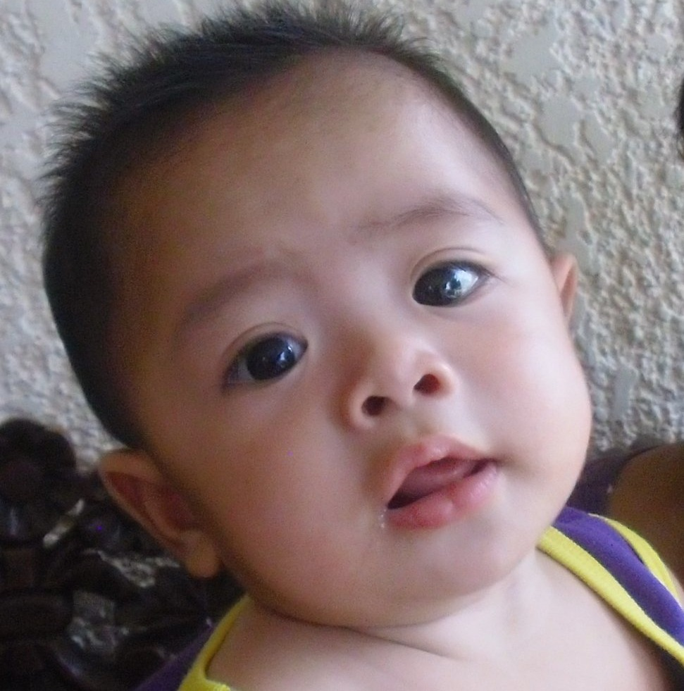

Hello! My name is Santino Miguel A. Santos. I am 14 years old and I am a resident of Las Pinas City. I love the Tagalog language and am a very avid researcher of Philippine culture. I particulary like reading about Southeast Asian cultures. I do like Khmer and Thai classical dance, as well as Philippine literature. I also like to make Tagalog poetry and love poetry. My favorite subject in Grade 9 would be Filipino, because I do love learning about my native language. Below are pictures of me as I grew up. Please enjoy!

Here's also a short poem I composed:
Ang Gintong Mga Ulap
Ako'y minsang namutawi sa mga ulap
Nawala sa liwaliw ng kay tamis kong mga pangarap,
Nagpakasasa sa hamog ng gintong galangang siyang pinong-pino,
Sandaling napawi ang lahat ng lungkot, hapis, at abang panimdim,
At sa hamog ng ginintuan kong mga pangarap, ako'y nagmaliw.
Matatamis na awiting mistulang kendi,
Liro, harpa, gitara't maging sinaunang kudyapi,
Malalamyang mga tinig, nagkakaisang mga himig,
Masisiglang sayaw't nakahahalinang mga tanawin,
Ay! Kay hirap hindi magpasakamay sa binhi ng luho't pagsaliw, pagkat;
Ang sa palasyo ng itaas, sino bang hindi magbibighani?
The lessons in ICT for this quarter can absolutely be applied to the real world. We are living in a digital world where web development is increasingly improved upon to satiate a need for digital development and website development. Due to this, it is very good that coding is implemented and integrated in the curriculum of LPCNSHS to ensure that its students and alumni are digitally apt in this new, modern world. HTML, CSS, and other forms of coding are finding new purposes through modern innovations in technology. I, as a Lapiscian, am blessed that I am able to learn such new innovations. It is also a privilege to get a sort of "training" to equip us students with the needed digital literacy skills to navigate a new world of technological advancement. In addition, the lessons especially lists, tables, and forms allow us to imbue our webpages with a sense of practicality.
.png)
.png)
.png)